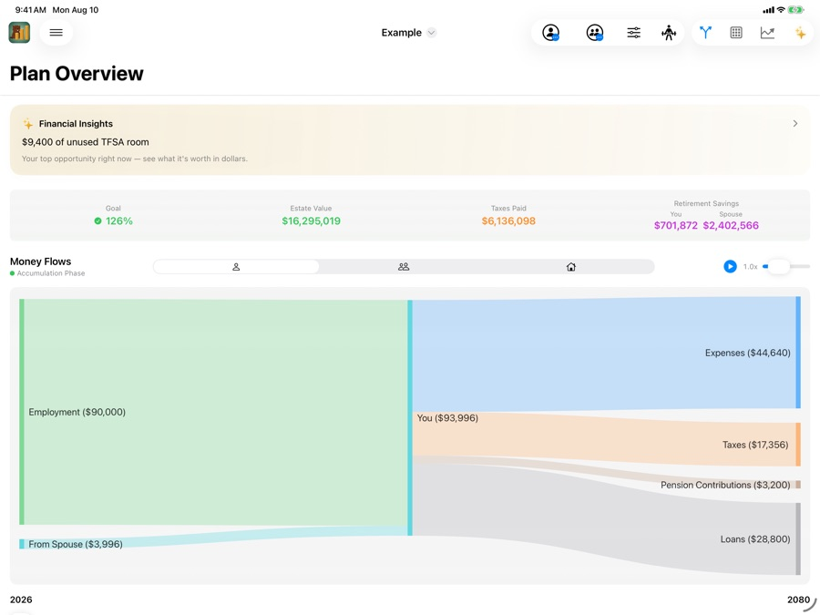
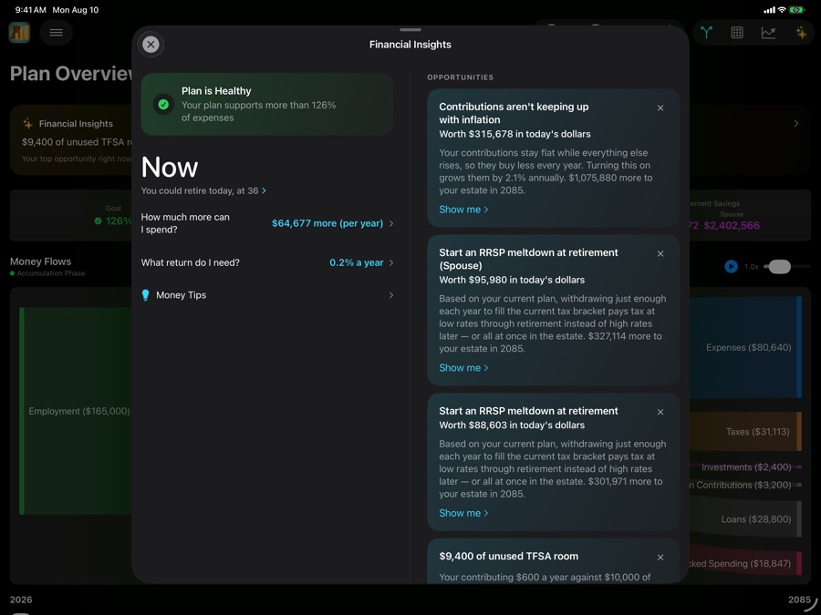
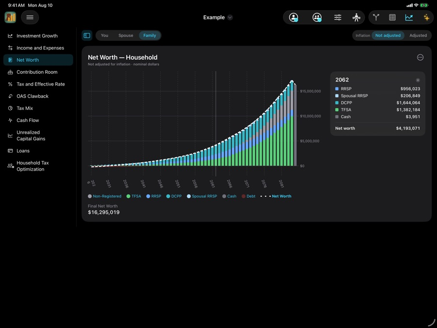
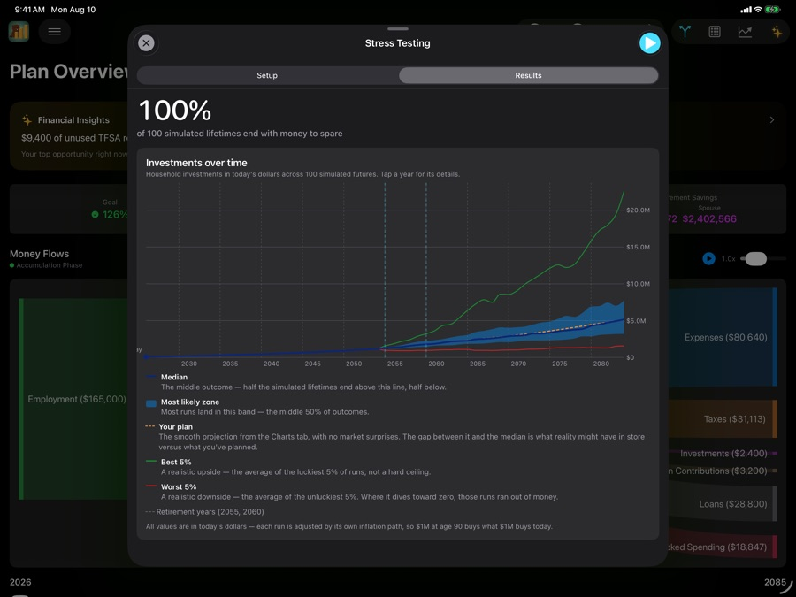
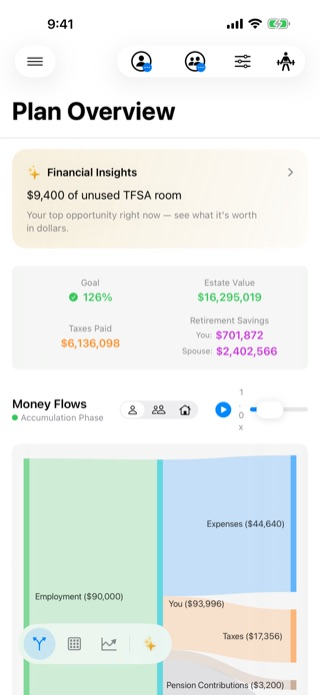
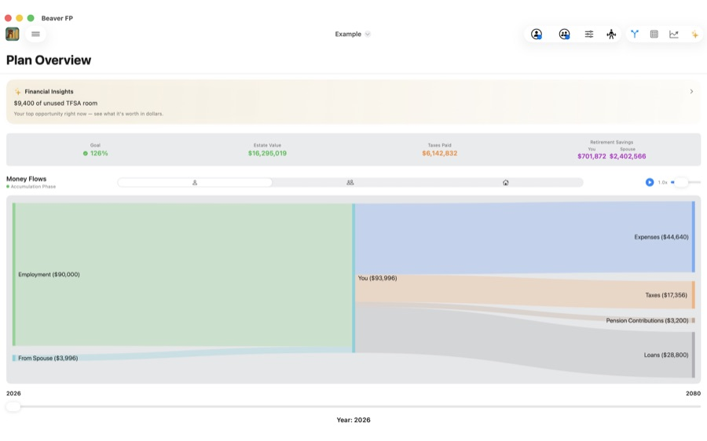

Built exclusively for Canadians
Build your Canadian retirement plan. Find what it’s missing.
Beaver FP projects your plan year by year with real CPP, OAS, GIS, TFSA, RRSP and full federal + provincial tax — then finds the changes worth making and prices every one of them in dollars.
No accounts. No tracking. No servers of ours — your plan can sync through your own iCloud.

Financial Insights
It finds what you’d have missed — and prices it
Most planners tell you whether your plan works. Beaver FP tells you what to change, ranks the options, and puts a dollar figure on each one. Tap Show me to see the year-by-year effect before you decide.

Three questions, answered directly
-
When can I retire? Searches for the earliest year your plan still holds, at the spending you’ve set.
-
How much can I spend? Solves for the highest sustainable spending, holding your retirement date fixed.
-
What return do I need? One break-even number you can hold against your own portfolio.
Opportunities, ranked and priced
- Contributions aren’t keeping up with inflation $315,678
- Start an RRSP meltdown at retirement $95,980
- $9,400 of unused TFSA room Show me
Values shown in today’s dollars, from the example plan pictured. Projections are illustrative and are not financial advice.
The whole app in nineteen seconds
Plan overview, year-by-year projections, charts, insights, stress test.
Eleven charts, built for Canadian retirement
Each one answers a question that shapes a Canadian retirement — how much contribution room you still have, how much of your wealth the CRA has a claim on, and which years you give OAS back.

- Contribution Room
- OAS Clawback
- Tax & Effective Rate
- Tax Mix
- Cash Flow
- Net Worth
- Investment Growth
- Income & Expenses
- Unrealized Capital Gains
- Loans
- Household Tax Optimization
- Switch any chart between You, Spouse and Household.
- Tap or slide along any year to see that year broken down, line by line.
- Toggle inflation-adjusted or nominal dollars — every chart says which it’s showing.
- Share any chart as an image, free, on every tier.
Then find out whether it holds up
A single projection assumes markets behave. Stress testing asks what happens when they don’t — and when the bad years land right where they hurt most.

- A hundred versions of your retirement. Your plan assumes one steady rate of return. Real markets are never steady, so a Monte Carlo simulation runs your plan 100 times over, each run dealing out a different but realistic run of good and bad years for both returns and inflation.
- How it will probably go, not just how it could go. Half of those hundred runs land inside the middle-50% band — that’s the realistic range. The median line is the middle result, the closest thing to what you should actually expect. Your own projection is drawn right alongside it, so the distance between the plan you made and the outcome you’re most likely to get is there in one picture — along with the best and worst 5% for how good and how bad it could reasonably get.
- Replay real history — 2008, COVID, stagflation — landing in the years you choose.
- Results in today’s dollars, so $1M at 90 buys what $1M buys now.
Stress testing is included with an annual or lifetime subscription.
Nothing is hidden, and nothing is fixed
Every number in the projection is one you can open up, understand, and overrule.
Enter your situation once
Income, expenses, accounts, debts, pensions and real estate — for one person or a couple. Sensible defaults get you to a working plan in minutes.
See every calculation
Open any year and see exactly how income, withdrawals, benefits and tax were worked out. No black box, no unexplained totals.
Override anything
A one-time bonus, a new roof in 2029, a stretch of higher inflation, a custom withdrawal order — change any value in any year and the whole projection responds.
Compare plans side by side
Copy a plan, change one thing, and run them against each other. Retire earlier, save more, move provinces — everything recalculates instantly.
Made for Canadian retirement
The accounts, benefits and tax rules that actually apply to you — modelled properly.
Government benefits
CPP started anywhere from 60 to 70, OAS with clawback and deferral, GIS eligibility, and DB bridge benefits with the CPP integration reduction at 65.
Registered accounts
TFSA, RRSP/RRIF, spousal RRSP, FHSA, LIRA/LIF and DCPP, with contribution room tracked year by year and conversion at 71.
Provincial tax accuracy
Full federal and provincial brackets for every province and territory, plus pension income-splitting optimization.
Couples & households
Separate retirement dates and longevity, automatic pension splitting, survivor transfers, and the estate settled on the last-to-die return.
Real estate & debt
Mortgages and renewals, secondary properties with capital gains, and downsizing with the equity redeployed into the plan.
Professional PDF reports
Generate a polished report — summary, projections and charts — to keep or bring to your advisor.
One app, all your Apple devices
Universal purchase across iPhone, iPad and Mac, in light or dark, with the layout reworked for each — not stretched.


Your finances stay yours
There is no Beaver FP server, no account to create, and no analytics. Your plan is stored on your device and, with a subscription, syncs to your other Apple devices through the private database of your own iCloud account — your storage, under your Apple Account. We never see it, because there is nowhere for it to reach us. Prefer it stayed on one device? Turn sync off.
Read the privacy policy →How it works
Enter your situation
Income, expenses, assets, debts and accounts, for a single person or a couple.
See your projection
Year-by-year net worth, income, expenses and tax through your expected longevity.
Improve and test it
Apply the opportunities worth taking, override what you like, then stress-test the result.
See it in action
Select any screen to view it full size.
Frequently asked questions
It reads your plan and ranks specific changes worth making — turning on pension splitting, starting an RRSP meltdown, filling unused TFSA room — with a dollar value on each, in today’s dollars. It also answers three questions directly: when you can retire, how much more you can spend, and what return your plan needs. Every card explains its reasoning and can be applied in one tap.
Building your plan, running year-by-year projections, viewing all eleven charts and using Financial Insights are free. An optional subscription unlocks iCloud sync between your devices, stress testing and export, including PDF reports. Current pricing is on the App Store listing.
Yes — one universal app across iPhone, iPad and Mac. On iPad and Mac the charts gain a sidebar and a persistent detail column beside the plot, so the year readout stays put instead of appearing and disappearing on every tap.
Your financial data is stored on your device and, with a subscription, syncs to your other Apple devices through the private database of your own iCloud account — your storage, under your Apple Account, which Apple doesn’t let developers read. There are no Beaver FP servers, no accounts and no data collection, so we never see your information. Syncing comes with every subscription — sync is then on by default when you’re signed in to iCloud; turn it off and Beaver FP stays local to the device you’re on.
Yes — that’s the whole point. Open any year to see how each number was calculated, and use overrides to change any value in any year. The entire projection recalculates instantly.
No. Beaver FP complements your advisor. Use it to model scenarios, understand your trajectory, and generate reports to discuss. It’s a planning tool, not professional financial advice.
Start with what you already know
Enter your situation, see the projection, and find out what your plan is worth improving.
Questions or feedback? support@beaverfp.com — we usually reply within 24 hours.